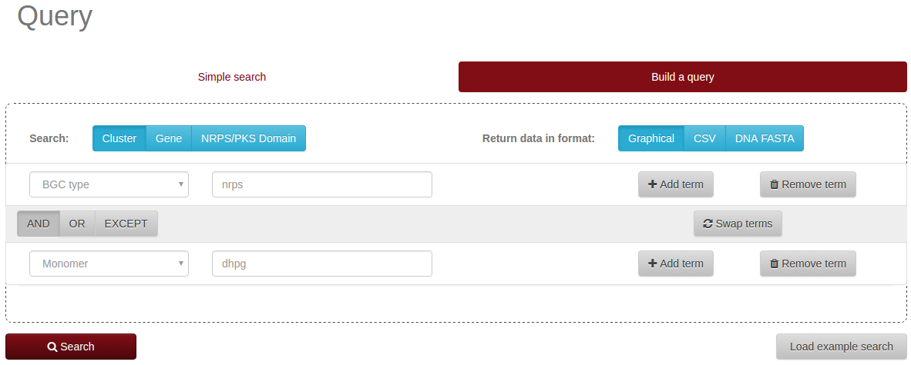
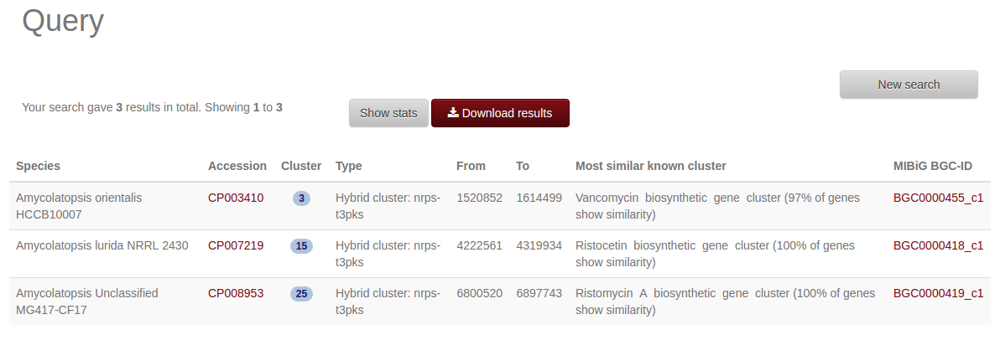
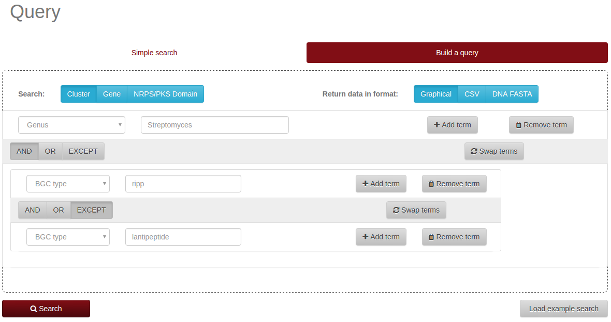
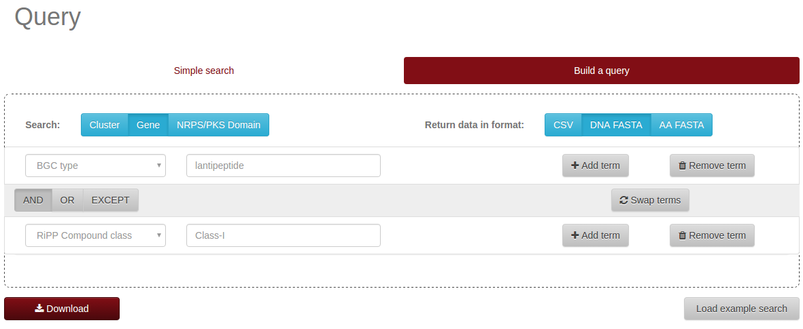

On the "Build a query" tab, a user can click the "Add term" button to create a second search term. For the first
term, he or she might, e.g., select "BGC type" as category and enter "nrps" as the search string. For the second term,
he or she could, e.g., select "monomer" as category and enter "dhpg" as search string, and hit "search".

Query to find NRPS clusters including the monomer dihydroxyphenylglycine (dhpg).
Currently three BGCs in the database match these search criteria and are returned on the results page:

Result for searching NRPS clusters including the monomer dihydroxyphenylglycine (dhpg).
Finding all ribosomally synthesised and posttranslationally modified peptide clusters in the Genus Streptomyces that
are not lantipeptides.
On the "Build a query" tab, a user could click the "Add term" button twice to create a second and third search term.
For the first term, he or she could select "genus" as category and enter "Streptomyces" as the search string. For the second
term, "BGC type" would be "ripp". The operation should be switched from "AND" to "EXCEPT". For the third
term, "BGC type" could be selected as category and "lantipeptide" entered as search string.

Query to find RiPPs in Streptomyces that are not lanthipeptides.
This query currently yields 265 clusters. To save the results for further analysis, the result table can be downloaded
as CSV file that can then be opened in a spreadsheet application.
On the "Build a query" tab, a user can click "NRPS/PKS Domain" on the "Search" setting, and "FASTA" on
"Return data in format".
Afterwards he or she could click the "Add term" button once to create a second search term.
For the first term, he or she could select "NRPS/PKS domain" as category and enter "ACP" as the search string.
For the second term, "NRPS/PKS domain" would be the category again, and "PKS_KS" the search string. The operation would be
changed to "OR".
Download all ACP and KS domain in FASTA format
On the "Build a query" tab, a user can click "Gene" on the "Search" setting, and "FASTA" on
"Return data in format".
Afterwards he or she could click the "Add term" button once to create a second search term.
For the first term, he or she could select "BGC type" as category and enter "lantipeptide" as the search string.
For the second term, the category would be "Compound class", and "Class-I" the search string.

Download all lanthipeptide class I prepeptide genes in FASTA format